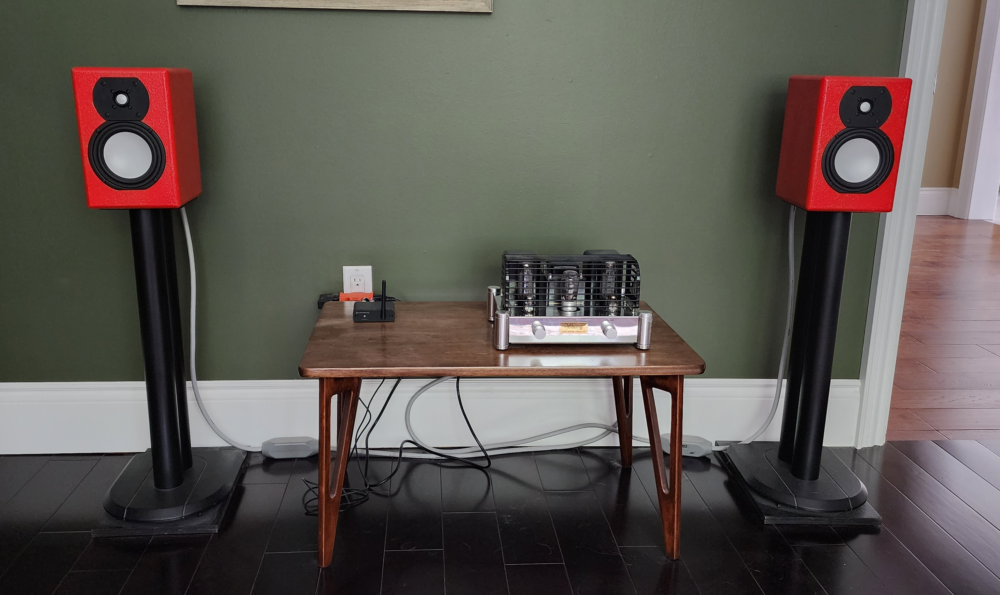

Current Listening Room

- BoyuuRange Reisong A10 EL34 Single-end Class A integrated tube amplifier
- Audioengine B1 Bluetooth Music Reciever
- GR Research Desktop "Mini" speakers - Build Instructions
- MITerminator 4 speaker cables (purchase in the early 90s)
- Tara Labs Space & Time Astral Blue interconnect cables (purchase in the early 90s)
- Apple MacBook Pro as the music source streaming high-definition audio files using VOX or Spotify
Every time I listen to music on this simple system, I'm amazed at how good it sounds. Especially, given how inexpensive it is and the fact that I built the speakers. This system is missing some bottom end, but that can be easily fixed with an active sub-woofer.
Potential Upgrades
GR Research Speakers
- GR Research X-Statik (my room my not be big enough for open baffle speakers)
- GR Research X-MTM Encore
- GR Research "Old School" Brute
Amps
- BoyuuRange Reisong A12 (12AX7 input tubes instead of the 6N2J tubes in the A10)
- BoyuuRange A50 MKII
- Decware Super Zen Triode
Depending on the next speakers I may need more power, which the following provide: - Willsenton R8 - BoyuuRange MT-34 MKII - LSA VT-70